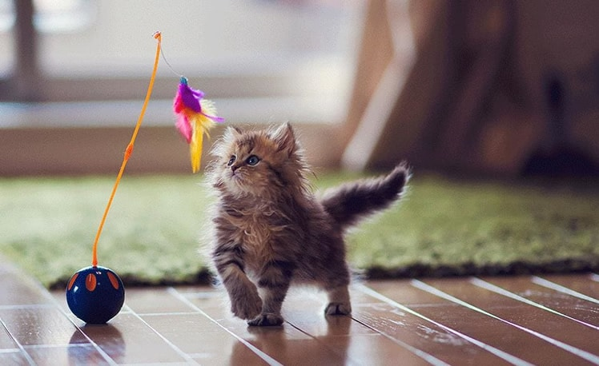
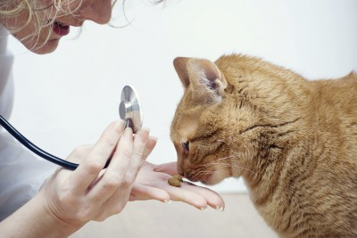
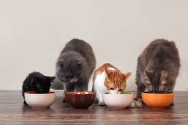

Dicas para adotar um gatinho!
- Informe-se. Busque saber mais sobre a espécie, seus hábitos, preferências e curiosidades.
- Se você resgatar um gato da rua é importante que o leve ao médico veterinário antes mesmo de ir para casa.
- Antes de trazer um gatinho para morar em casa, é importante preparar o ambiente para que ele se sinta acolhido e esteja seguro.
- Embora os gatos aparentam ser animais calmos, eles costumam ser bichos bem territoriais. Portanto, antes de adotar um gato, é importante se preparar para a
socialização dele com pessoas e os outros animais da casa.
Perguntas que você deve se fazer antes de adotar:
- Você quer mesmo adotar?
- Sua casa está preparada?
- Você está preparado financeiramente?
Dicas para cuidar do seu gatinho!
Brinquedos
Hoje em dia se encontram opções como bolinhas, arranhadores, túneis interativos, ratinhos, ponto de luz,...
- Brinque com seu gato. Compre brinquedinhos para ele se divertir, ele vai amar!
Veterinário
Fique atento !!!
- Leve-o ao veterinário se perceber que tem algo de errado com ele.
Alimentação
Dê sempre comida fresca a ele, não deixe a ração ficar "ventada". Troque a água regularmente.
- Faça com que ele tenha uma rotina alimentar, um número certo de refeições ao dia.